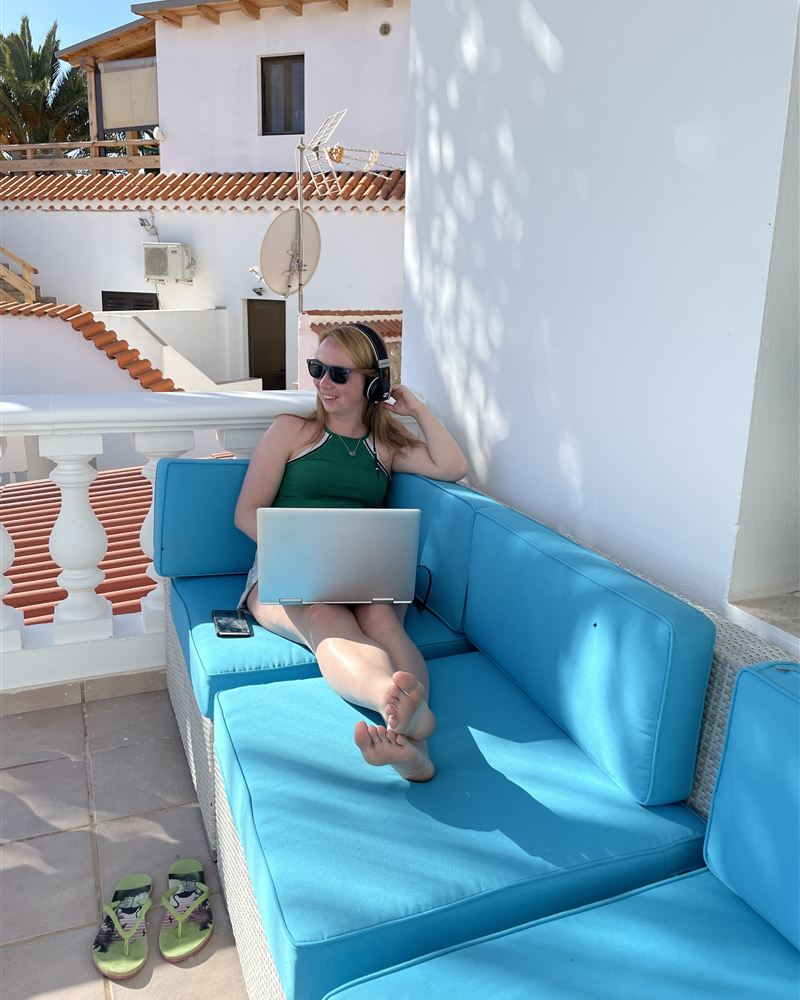

Planung und Strategie
Was kostet Social-Media-Betreuung?
Marktpreise in Deutschland und Spanien im Überblick, mit Quellen und ohne eigene Preise.
Planung und Strategie, Gäste aus dem anderen Land und Social-Media-Praxis, verständlich erklärt und mit Quellen. Einige Beiträge sind auf Spanisch.
Planung und Strategie
Marktpreise in Deutschland und Spanien im Überblick, mit Quellen und ohne eigene Preise.

Planung und Strategie
Nach Saison und Buchungszeit planen, mit kostenloser Vorlage und den Feiertagen 2027 in Deutschland und Spanien.

Gäste aus dem anderen Land
Worauf deutsche Gäste vor der Buchung achten und wie dein Profil darauf antwortet.

Social-Media-Praxis
Von der Speisekarte bis zur Antwort auf Bewertungen: was Restaurants auf Social Media brauchen.

Gäste aus dem anderen Land
Cómo atraer huéspedes alemanes fuera de temporada.

Gäste aus dem anderen Land
Soziale Medien dienen laut Gabler Wirtschaftslexikon der Vernetzung und Kommunikation von Menschen über das Internet. Bei der Social-Media-Betreuung übernimmt jemand diese Kommunikation für deinen Betrieb: Planung, Beiträge, Antworten und Auswertung. Was kostet das? →
Eine Community ist laut Gabler Wirtschaftslexikon ein Netzwerk von Menschen, die miteinander in Kontakt stehen und ein Zusammengehörigkeitsgefühl entwickeln. Community-Management heißt, dieses Netzwerk zu pflegen: Kommentare und Nachrichten beantworten, Fragen aufgreifen und eine Beziehung zu deinen Gästen aufbauen. Community-Betreuung →
Laut dem Wörterbuch der Real Academia Española heißt es, ein Produkt oder Geschäft von einer bestimmten Jahreszeit zu lösen. Für Hotels bedeutet das: auch außerhalb der Hauptsaison Gäste gewinnen. Zum Artikel (ES) →
Mit der Checkliste prüfst du in 10 Minuten selbst, was schon passt und was noch fehlt. 12 Punkte, kostenlos und ohne Anmeldung.
Zur Checkliste